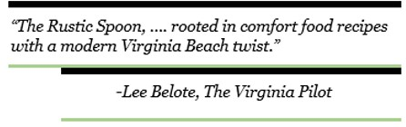

Partners and long-time friends, Ryan Hines and Jay Kulas  believe that the most important moments in life are about building relationships and usually involve a great meal. Maintaining a friendship for over fifteen years, the two shared a common approach when it came to opening a restaurant - to create a warm and comfortable atmosphere for friends and family to gather, curate experiences and build meaningful connections.
Stripping away the formalities of the typical dining experience, The Rustic Spoon is serving up breakfast, brunch and lunch while focusing on quality local ingredients, family recipes, warm service and a relaxed causal ambiance. Rooted in family, friends and food they offer diners a one of a kind atmosphere to enjoy comfort food recipes with a modern and local twist.